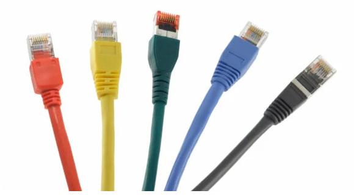
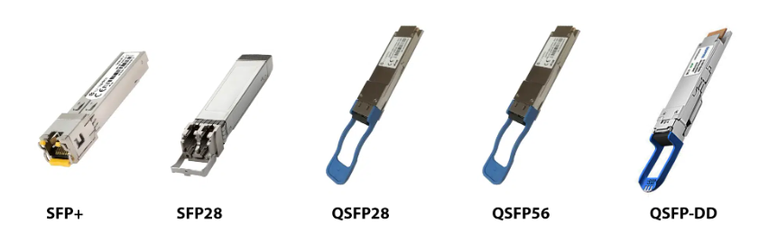

1. 개요
- 머신비전 카메라 케이블 연결은 카메라와 프레임그래버 또는 PC 간의 데이터 전송 및 전원 공급을 담당한다.
- GigE, USB3, Camera Link, CoaXPress 등 인터페이스에 따라 케이블 종류와 연결 방식이 달라진다.
- 안정적인 신호 전송을 위해 케이블 길이, 차폐 성능, 커넥터 고정 상태를 고려하는 것이 중요하다.
- 각 인터페이스는 전송 속도, 케이블 최대 길이, 용도에 따라 선택이 달라진다.
2. 케이블의 종류
① Ethernet
- 1983년 IEEE 802.3 표준으로 도입된 LAN 기술
- IEEE 802.3은 물리적 계층 및 데이터 링크 계층의 미디어 액세스 제어(MAC)에 대한 사양 정의
- 연선 동선(BASE-T)과 광섬유 배선(BASE-R)을 지원하는 유선 기술
- 연선 구리 배선 기반 BASE-T 이더넷 표준
1000BASE-T : 1Gbps, Cat5e/Cat6, 최대 100m10GBASE-T : 10Gbps, Cat6A/Cat7/Cat7A, 최대 100m

- 광섬유 배선 기반 BASE-R 이더넷 표준
10GBASE-R : 10Gbps, SFP+, 최대 80km25GBASE-R : 25Gbps, SFP28, 최대 80km50GBASE-R : 50Gbps, QSFP28/SFP56, 최대 80km100GBASE-R : 100Gbps, QSFP28/SFP56/SFP-DD, 최대 80km

② USB (Universal Serial Bus)
- 1996년 처음 발표되었으며 USB-IF(USB Implementers Forum)에서 관리
- 주변기기 연결을 표준화하도록 설계된 범용 직렬 버스 인터페이스
- 버전별 전송 속도 및 케이블 최대 길이
USB 2.0 : 480Mbps, 최대 5mUSB 3.0 / 3.1 Gen 1 : 5Gbps, 최대 3mUSB 3.1 Gen 2 : 10Gbps, 최대 3mUSB 3.2 (2×3.1 Gen 1) : 10Gbps, 최대 3mUSB 3.2 (2×3.1 Gen 2) : 20Gbps, 최대 3mUSB 4 : 40Gbps, 최대 0.8m

③ CoaXPress (CXP)
- 동축 케이블을 통한 점대점(Point-to-Point) 통신 표준
- 2008년 Vision Show에서 공개되었으며 JIIA(Japan Industrial Imaging Association)에서 관리
- 버전별 전송 속도 및 케이블 최대 길이
CXP-1 : 1.25Gbps, 최대 212mCXP-6 : 6.25Gbps, 최대 60mCXP-12 : 12.5Gbps, 최대 40mCXP Over Fiber : 10Gbps, 최대 80km

④ Camera Link
- 카메라와 프레임 그래버(Frame Grabber) 간의 연결을 표준화한 병렬 통신용 고대역폭 프로토콜
- 구리 및 광섬유 케이블을 모두 지원
- 버전별 전송 속도 및 케이블 최대 길이
Camera Link Base : 2.04Gbps, 최대 10mCamera Link Full : 5.44Gbps, 최대 10mCamera Link Deca : 6.80Gbps, 최대 10mCamera Link HS : 25Gbps, 최대 80km (광섬유)

3. 인터페이스 종합 비교
| 인터페이스 | 최대 대역폭 | 최대 케이블 길이 | 전원 통합 | 특징 |
|---|---|---|---|---|
| GigE (1000BASE-T) | 1Gbps | 100m (구리) | PoE 지원 | 범용 스위치/케이블 사용 가능, 가장 저렴하고 배선 자유도 높음 |
| 10G/25G Ethernet (BASE-R) | 10~100Gbps | SFP+ 광케이블 최대 80km | 미지원(일반적) | 초고속·장거리, 광통신 인프라 필요 |
| USB3 Vision | 5~20Gbps | 5~7m (표준), 액티브 케이블로 확장 | 버스 파워(케이블 내 전원선) | 플러그 앤 플레이, 짧은 거리에서 저지연·고대역폭 |
| CoaXPress (CXP-12) | 12.5Gbps/케이블 | 최대 40m (동축) | PoCXP 지원 | 고속+장거리+전원까지 한 케이블로 해결, 프레임그래버 필수 |
| Camera Link | 최대 6.8Gbps (Deca) | 10m | 미지원 | 병렬 방식, 레거시 시스템에서 여전히 널리 사용, 프레임그래버 필수 |
개발자 노트 — 짧은 거리·저비용이면 USB3, 배선 유연성과 표준 네트워크 장비 재사용이 중요하면 GigE(+PoE), 매우 빠른 라인 속도와 긴 케이블이 동시에 필요하면 CoaXPress가 유력합니다. Camera Link는 신규 설계보다는 기존 설비 유지보수 관점에서 접하는 경우가 많습니다.
4. 전원 통합 케이블링 : PoE & PoCXP
- PoE (Power over Ethernet) : IEEE 802.3af/at/bt 표준에 따라 하나의 이더넷 케이블로 데이터와 전원을 동시에 전달
- PoCXP (Power over CoaXPress) : 동축 케이블 1선으로 데이터·제어 신호·전원까지 함께 전달
- USB3 Vision : 케이블 내 전원선을 통한 버스 파워로 소형 카메라 구동 가능(단, 소비전력이 큰 카메라는 외부 전원 필요)
일반적인 산업용 GigE 카메라는 802.3af로 충분하나, 온보드 AI 처리·히터 등 소비전력이 큰 카메라는 802.3at 이상이 필요할 수 있음
별도 전원선이 없어 배선이 단순해지고, 카메라 설치·교체가 쉬워짐
프레임그래버의 CXP 포트가 카메라에 전원을 직접 공급하므로 별도 전원 공급 장치 없이 카메라 연결 가능
개발자 노트 — 전원 통합 케이블은 배선을 단순화하지만, PoE 인젝터/스위치 또는 PoCXP 지원 프레임그래버가 있어야 동작합니다. 카메라 스펙에서 "PoE 지원"만 보고 아무 스위치나 연결하면 전원이 공급되지 않을 수 있으니, 스위치·프레임그래버 쪽의 PoE/PoCXP 지원 여부도 함께 확인해야 합니다.
5. 커넥터 잠금 방식과 산업 현장 신뢰성
- 일반 사무 환경용 커넥터(RJ45, USB-A 등)는 단순 삽입식이라 진동·충격이 있는 생산 라인에서 헐거워지거나 빠질 위험이 있음
- 산업용 케이블은 나사식·잠금식 커넥터를 사용해 이 문제를 방지함
M12 커넥터 : 산업용 이더넷/GigE에서 널리 사용되는 원형 나사 잠금 커넥터, 방진·방수(IP67) 등급 지원
CoaXPress : DIN 1.0/2.3 또는 나사 고정형 동축 커넥터로 진동에 강함
Camera Link : SDR/MDR 커넥터에 잠금용 나사(Thumbscrew)가 기본 포함
산업용 USB3 : 일반 USB 커넥터에 스크류 락(Screw-Lock) 구조를 추가한 커넥터 사용
개발자 노트 — 데스크탑 환경에서 문제없던 케이블이 실제 생산 라인(진동, 로봇 이동, 컨베이어)에서는 접촉 불량으로 간헐적 프레임 드랍을 일으키는 경우가 흔합니다. 설치 환경이 고정된 검사대인지, 로봇 암처럼 반복적으로 움직이는 구간인지에 따라 커넥터 잠금 방식과 케이블 등급을 다르게 선택해야 합니다.
6. 신호 무결성 & 노이즈 대책
- 차폐(Shielding) : 모터, 서보 드라이버, 용접기 등 전자 노이즈가 많은 공장 환경에서는 90% 이상 편조 차폐(Braided Shielding)가 적용된 케이블을 권장
- 액티브 케이블 : USB3 Vision은 표준 케이블 길이가 5~7m로 제한되지만, 신호를 중계·증폭하는 액티브 케이블을 사용하면 20m 이상까지 확장 가능. 다만 더 먼 거리가 필요하면 GigE/CoaXPress 전환을 고려하는 것이 일반적
- 드래그체인(Drag Chain) 케이블 : 로봇 암, 갠트리처럼 반복적으로 구부러지는 구간에는 수백만 회 굴곡 시험을 통과한 드래그체인 전용 케이블 사용 필요 (일반 케이블은 반복 굴곡에 단선되기 쉬움)
개발자 노트 — 원인을 알 수 없는 간헐적 통신 오류나 이미지 노이즈가 발생하면, 소프트웨어보다 케이블 차폐·접지·굴곡 피로부터 의심해보는 것이 실무적으로 효율적입니다. 특히 인버터/서보 모터 근처를 지나는 케이블은 반드시 별도 배선 경로와 차폐를 확보해야 합니다.
7. 머신비전 개발자를 위한 케이블 선정 체크리스트
- 필요 대역폭 — 해상도×비트심도×프레임레이트로 계산한 필요 대역폭이 인터페이스 한계 내에 있는지 확인 (카메라 페이지 4-⑤ 참고)
- 설치 거리 — 카메라와 PC/프레임그래버 간 실제 배선 거리가 표준 케이블 한계 내인지, 초과 시 액티브 케이블·인터페이스 변경 필요 여부
- 전원 공급 방식 — PoE/PoCXP로 단순화할지, 별도 전원 공급 장치를 둘지 결정
- 설치 환경 — 진동/이동 여부에 따른 커넥터 잠금 방식과 드래그체인 케이블 필요 여부
- 전자 노이즈 환경 — 모터·인버터 근접 여부에 따른 차폐 등급 및 배선 경로 계획
- 다중 카메라 구성 — 여러 대의 카메라를 동시에 운용할 경우 스위치/프레임그래버의 포트 수와 총 대역폭 여유 확인